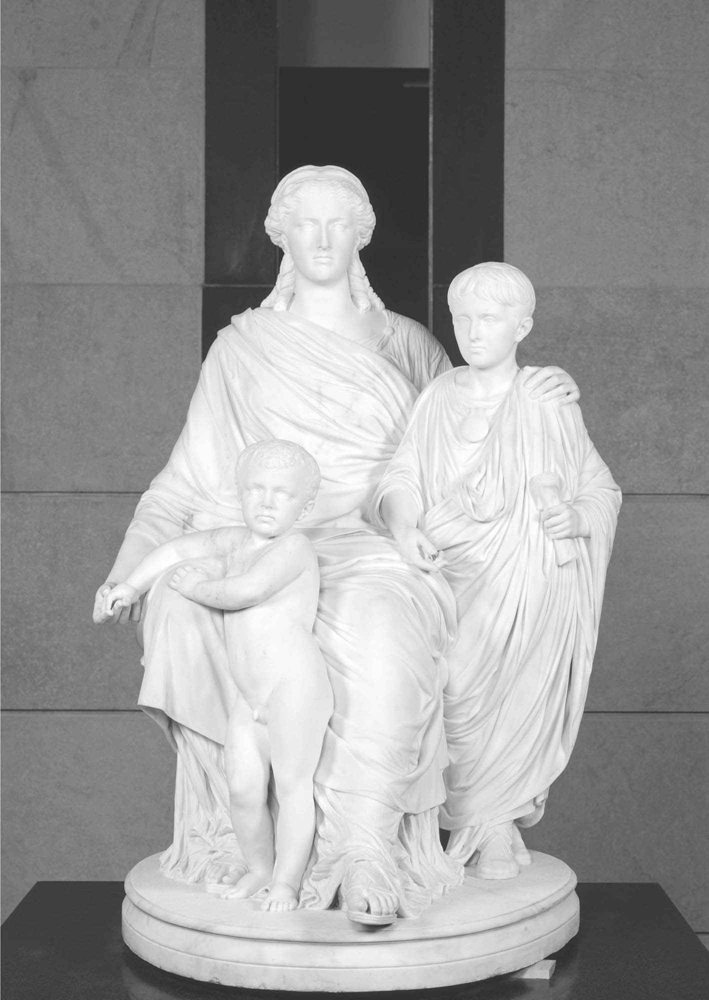
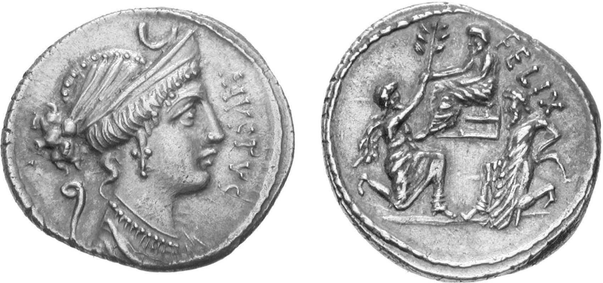

公元前146年迦太基和科林斯城的毁灭再次印证了罗马共和国对地中海世界的统治。再无敌人能对元老院的权威和罗马军团的军事实力形成威胁。然而，仅过了一个世纪后没多久，罗马共和国就垮台了。共和国依赖的政治和社会平衡机制在混乱和内战中分崩离析。终极大权从元老院和罗马人民转移到皇帝一人之手。
从真正意义上说，罗马共和国是自身成功的一个牺牲品。共和政制不断进化，是为了满足一个小型意大利城邦发展的需要。作为一个政治制度，共和政制是一项卓越的成就。它稳定而不失灵活，并能在集体和个人统治之间保持谨慎的平衡。但这个制度却从未为管理一个帝国做好准备。对外扩张给罗马共和国的政治结构和元老精英阶层的集体权威带来源源不断的压力，这种压力同样让罗马的社会和经济结构不堪重负。早期的罗马人生活在一个小型农耕世界中，而由农民兵组成的军队只在战争季出征作战。在深度和广度上贯穿整个地中海的军事冲突以及和迦太基之间的漫长战争，让传统的罗马军队备受折磨。军事胜利带来的大量财富和奴隶迫使罗马农业经济发生转型。正是在公元前2世纪，以上压力造成的所有影响向罗马和意大利袭来，进而引发了一系列事件，在公元前1世纪罗马共和国的灭亡中达到高潮。
第二次布匿战争及罗马势力扩张到希腊东方世界使罗马元老阶层中出现了新一代人物。西庇阿·阿非利加努斯史无前例的政治生涯使元老之间地位平等这一极其重要的共和精神受到了挑战。一个手握权力又享受民众爱戴的罗马贵族和元老院的集体意志相背离，这在共和国历史上还是第一次。但西庇阿绝非孤例。罗马精英的竞争思维必然促使其他贵族寻求获得和西庇阿一样的地位或意欲将其超越。弗拉米尼努斯击败马其顿的腓力时，其年龄同西庇阿战胜汉尼拔时同样年轻。在“希腊自由”宣言之后，弗拉米尼努斯的凯旋式几乎同样磅礴壮观。另一方面，西庇阿通过帮助其弟战胜叙利亚的安条克又再次彰显了自己的威望。这种为追求财富和荣耀而不断升级的竞争在整个精英阶层中蔓延开来。公元前188年，一个名叫格涅乌斯·曼利乌斯·乌尔索的不起眼的贵族，借罗马和安条克发动战争之机，从叙利亚进入与其接壤的加拉提亚地区，无端发动了一场掠夺式袭击。乌尔索的行动此前并未得到元老院同意，却被授予了返回罗马举行凯旋式的殊荣。在后来的罗马对外关系中，此类自私行为频繁发生，这让控制那些野心勃勃的将领变得更加困难，尤其是当后者远离罗马城、身在其他地方的时候。
公元前2世纪早期，元老院的集体权威依然可以牵制贵族个人的行动。即便是西庇阿·阿非利加努斯，当他被勒令提供对安条克发动战争的财政记录时，也不得不选择离开罗马，自我放逐，尽管他抗议说“对罗马人民来说，聆听任何人对普布利乌斯·科尔涅利乌斯·西庇阿的控诉都是不合适的。能够战胜后者，那是因为原告拥有言论的力量”（李维语）。为了努力避免将来再次出现以西庇阿和弗拉米尼努斯的政治生涯为效仿对象的贵族，罗马在公元前180年出台了《任职年限法》（Lex Villia Annalis ）。该法案规范了“荣誉阶梯”官制体系中的传统结构，为不同官职设置了法定任职年龄。在约公元前151年，又制定的一个后续法令规定所有人只能有一次担任执政官的机会。然而，因为贵族竞争太过激烈，以至于法律无法对其形成有效的控制。具备较强能力的个人不断涌现，对元老院的统治形成威胁。这是以西庇阿·埃米利阿努斯在第三次布匿战争中非法当选执政官为开端的。
罗马权力的扩张及财富的大量增加影响到的不仅仅是元老阶层。公元前2世纪，在罗马社会内部，“骑士”作为一个单独的集团出现了。最初，正如其名所示，“骑士”是被罗马军队征召，作为骑兵服役的较为富裕的公民。在共和国早期，这个集团也包括那些元老家族出身的人，因此，元老和骑士之间并没有清晰的界限。随着时间的推移，大量财富涌入罗马城，这造就了一个特有的社会阶层，其成员拥有大量财富，但缺乏古老贵族家庭的地位。最终，公元前129年，法律将元老从“骑士阶层”（ordo equester ）中正式分离出来。骑士并非元老院一员，除非他们当选政府高级官员而进入元老阶层。骑士阶层的人大多从事工商业。按照传统，理论上元老被禁止涉足这两类领域，当然实际情况并非总是如此。建筑行业和行省征税也是骑士大显身手的地方。大型商贸城市迦太基和科林斯被摧毁进一步提升了骑士的影响力，在共和国晚期，他们在罗马社会和政治领域中发挥了十分突出的作用。
对罗马和意大利地区更广大的人群而言，扩张造成的经济影响甚至更加深远。和所有其他古代社会一样，罗马的贫富差距同样悬殊，大规模的征服战争带来的巨额财富只会扩大这一鸿沟。富人变得更加富有，大部分战利品流入贵族的腰包。穷人则只能承受苦果，因为通货膨胀抬高了物价，而奴隶市场使劳动力的获取比以前变得容易很多。一个罗马农民每年只能靠240塞斯特尔斯维持生计。骑士阶层中的一员拥有的资产估值高达40万塞斯特尔斯。传统上，一名元老的最低财产标准需要达到100万塞斯特尔斯。这类数字听上去似乎比军阀崛起的故事要枯燥，但相比之下，对外扩张的经济影响给罗马的团结和稳定带来的威胁却绝不可小觑。
在一个将农业作为财富的主要基石的世界里，富人将他们新获取的资源投入到地产中。奴隶则在宽广的田地里劳作。同时，他们还要种植葡萄和橄榄以加工成葡萄酒和橄榄油等商品。仅公元前167年，从伊庇鲁斯得到的奴隶数量就高达15万人。因奴隶数量众多造成的奴隶起义成为罗马的一个严重威胁，公元前1世纪早期的斯巴达克斯起义就是一个很好的例子。然而，同样重要的是，伴随着人口的逐渐增加，贵族地产和奴隶劳动力的数量攀升为罗马和意大利的小农阶层带来压力，而后者是组成罗马军队的支柱。失去土地的人开始流向城市和首都罗马，在那里他们的数量日渐膨胀，成为不安定的城市暴民。同时，那些失去土地者也无法达到入伍所必需的财产标准，因而无法在军中服役。
有限的证据让我们很难对公元前2世纪罗马所面临的社会危机的程度做出精确评判。当然，并非所有的罗马小农都消失了。当罗马真正需要大规模征兵的时候，譬如公元前146年，还是可以做到的。但兵源的确成了一个难题。西班牙旷日持久的战争极其不受欢迎。在公元前151和前137年，由于在军队征兵上的反对意见，执政官甚至被平民保民官投入了监狱。在这个问题上，意大利同盟者也怏怏不乐。他们向罗马输出的人力资源和忠诚度是后者取胜的关键所在。他们要在万里之遥的地方经年累月地作战，尽管可以分得部分战利品，但在政治上却无法发出自己的声音。崭露头角的骑士阶层同样希望在公共事务中发挥更大的作用，动荡不安的城市暴民也趁此机会表达不满。所有以上紧张的局势，只需星星之火就能将其点燃。而提比略·森普罗尼乌斯·格拉古在公元前133年当选平民保民官引燃了这个导火索。
提比略·格拉古（出生于约公元前163年）来自罗马最高贵的家族，与其重名的父亲曾两次当选执政官。他的母亲名叫科尔涅利娅，是西庇阿·阿非利加努斯的女儿。因此，年轻的提比略面临着家族寄予厚望取得功名的巨大压力。获取荣耀的传统途径是通过军事胜利及担任执政官。但提比略却有意通过保民官一职寻求社会改革。根据其弟盖乌斯的说法，提比略曾在前往西班牙途中路过意大利北部地区。当他旅行时：

图7 科尔涅利娅和格拉古兄弟（1861）
提比略的解决之道虽然简单却具有启发性。在公元前133年当选保民官时，他提议将土地分配给那些失业的小农，从而一举舒缓社会矛盾、减少城市暴民并改善兵员危机。为达到这个目的，他希望重新分配公有土地，即早期征服意大利时获得的土地，由国家租给贵族耕种。法律上说，一名罗马人拥有的公有土地面积不得超过500尤格（约合312.5英亩），但是这一限制长期以来被人忽视。提比略准备将所有超出定额的公有土地充公，并将这些新获得的土地以30尤格（20英亩）为一个单元分给失业的小农。并且，新分配的土地不得转让，富人因而无法将它们再次收购。
在一个保守的农业社会里，任何试图更换土地所有权的提案都会引起强烈的恐慌情绪。大量公有土地世代被某些家族持有，并允许被继承、出售，甚至用作家族墓地。总之，提比略遭到了来自元老贵族集团的反对，因为他们是改革中损失最惨重的那批人。由于无法说服元老院支持自己的提案，提比略决定行使保民官立法权，转向作为公民大会之一的平民议事会寻求支持。这一行为并未违反法律，但传统上来说，法律提案首先需要得到元老院的认可。此外，提比略的保民官同僚也是贵族出身。在平民议事会上，提比略再次遭到了阻碍。比如其中一个保民官马尔库斯·屋大维就行使了否决权。提比略回应说，作为保民官，其天职就是服务于人民：“如果宣布人民的权力无效，那么他就不应该再是一名保民官了。”屋大维遭到免职，并被从平民议事会会场强行拖走。在由先例组成的体制中，这种做法是没有先例可循的。提比略的法律提案，《森普罗尼亚耕地法》（Lex Semperonia agraria ）成为法律。
但新法却无法得到推行。土地标记模糊不清，相关记录也很贫乏，提比略发现自己无时不在阻力之下。无奈之中，他转向了一个谁都没料到的目标寻求援助。公元前133年夏，帕加马国王阿塔卢斯三世去世。因其未留继承人，他把自己的王国赠送给罗马。提比略把阿塔卢斯的遗产夺过来充当土地分配的资金来源。与此同时，他还立法称罗马人民将在亚细亚建立一个新行省。提比略通过以上行为挑战了罗马的统治秩序，因为财政和外交事务一直以来都是掌握在元老院手中的。提比略渴望攫取个人权力，甚至意欲成为众矢之的的罗马国王的流言开始四处传播。此后，他试图通过再次当选保民官来为正在实施中的改革提供保障。这也成了压垮他的最后那根稻草，因为此举挑战了罗马年度更换官员的原则。他再次提名参加保民官竞选的做法引发了骚乱，300余人在暴动中惨遭杀害。提比略被一个元老身份的暴徒袭击而亡，他的尸体被扔进了台伯河里。
提比略的死亡也让他的耕地改革计划中道崩塌。直到公元前123年，也就是提比略的弟弟盖乌斯（生于公元前154年）紧随其兄的脚步成功当选保民官的那一年，法案再次得以恢复。没有人质疑盖乌斯的勇气，因其兄长所遭遇的命运摆在面前，他却依然选择踏上改革的征途。像提比略一样，他试图通过重新分配土地为小农提供帮助，但盖乌斯的提案覆盖范围更广，影响到了罗马社会的各个层面。为了帮助人口日益增加的罗马城市贫民，他为国售粮食限定了价格。古罗马几乎不存在任何组织化的福利和慈善制度。因此，通过提供食物和娱乐以保障人民幸福的重要性，被生活于稍晚时期的讽刺作家尤维纳利斯喻为“面包和竞技”。盖乌斯同样对新崛起的骑士阶层施以援手。他在罗马行省建立了包税制。这一制度规定骑士群体向国家缴纳既定数额的税款，并负责监督税收，保障获取一定的利润。与此同时，他允许来自骑士阶层的人主持刑事法庭，其控制权原来掌握在元老衔的陪审团成员手中。这防止了元老对法庭的滥用，但同时也将行省大门向骑士敞开，后者可以起诉那些调查其剥削行为的正派的元老衔总督。
覆盖面极广的改革计划为盖乌斯带来了巨大的声誉。不同于提比略，他在争取公元前122年连任保民官的选举中获得了成功。同时，这激发了来自元老院更甚于提比略的仇恨。盖乌斯向城市平民和骑士阶层发出的呼吁威胁到了元老院的权威，他的个人地位和声望又使其陷入控诉其个人野心膨胀的声浪中。这样，元老院的操作使盖乌斯的支持度一点点遭到削弱。其他贵族保民官也被拉拢过来，要么反对盖乌斯的政策，要么制定更加诱人的政策与其竞争。这迫使盖乌斯不得不寻求新的支持者。因此，他推出一项授予意大利同盟者全部罗马公民权的法律提案。该法律可以减轻意大利日益激化的矛盾，然而却遭到来自贵族和罗马平民的双双反对，后者担心这会给他们的食物和工作带来竞争。盖乌斯在这项政策上的失败进一步削弱了他的地位。他在公元前121年的竞选中以全副武装现身，激发了另一场大规模的骚乱。元老院有史以来第一次通过“元老院最终决议”（senatus consultum ultimum ），其给予执政官采取任何必要之行动捍卫共和国的权力。3000名盖乌斯的追随者被害，盖乌斯本人自杀身亡。官方悬赏凡获得盖乌斯头颅的人，将获得和该头颅同等重量的黄金。第一个拿到盖乌斯脑袋的人在前往领取奖品前，先将大脑除去，再向颅内灌入熔化了的铅液。
后人将格拉古兄弟视作罗马人民的佼佼者，而他们的塑像也如神庙中的诸神一样得到崇拜。但提比略和盖乌斯致力于解决的问题依然存在。他们颇具争议的政治生涯也逐渐动摇着元老院统治的稳定。因此，格拉古兄弟时代标志着罗马混乱一百年的开端，并最终将共和国引向灭亡。随着土地控制、军队征兵和同盟者权利等方面的矛盾持续酝酿、升级，一系列军事危机最终为下一世纪军阀的崛起打开了大门，进一步对元老院的集体权力构成挑战。
这一阶段爆发的第一场危机是朱古达战争（公元前112—前105）。朱古达是努米底亚人的国王，其王国和罗马阿非利加行省接壤。公元前112年，朱古达下令屠杀在这一地区生活的罗马和意大利商人，颜面受损的罗马政府不得不做出回应。在军事上，朱古达几乎无法对罗马造成任何威胁，但他在利用罗马人腐败方面的手腕是一流的，这充分体现在他那句著名评语上，即罗马“是个待售的城市，一旦有了买家，它的日子就屈指可数了”。被派去和朱古达作战的元老衔将领的无能和贪婪让这场战争变得旷日持久，直到公元前107年，盖乌斯·马略当选执政官，成为军队统帅。马略是一名“新人”，也就是本家族中首个获得执政官职位的人。他之所以能成功当选，在于其作为一名从军经验丰富的士兵获得的声望。同时，他娶了尤利娅为妻，此人是尤利乌斯·凯撒的姑妈。虽然尤利乌斯家族在政治上地位并不突出，却有着十分古老的渊源。马略接任后，朱古达的军队迅速败北，尽管战争一直持续到公元前105年。这一年，朱古达被马略的部将兼竞争对手卢修斯·科尔涅利乌斯·苏拉俘获，标志着战争的结束。

图8 刻画朱古达被俘的第纳里银币（铸于公元前56年）。正面：戴安娜女神头像；反面：苏拉坐在一把升高的椅子上，其前方，努米底亚的国王波库斯单膝跪地，献上橄榄枝，朱古达则跪在苏拉座椅后方，双手被绑在身后
当阿非利加战事逐渐走向尾声之际，一场来自北方的严重得多的威胁正向罗马逼近。公元前2世纪末，数量庞大的日耳曼部落进入高卢和意大利北部地区。他们并不是以抢劫为生的士兵，而是规模完整的迁徙部落，据说人数达30万余众。这是迫于遥远东部地区的压力而进入罗马领土的众多日耳曼迁徙浪潮中的第一波。辛布里人和条顿人让罗马军队遭遇了一连串的失利，并在公元前105年的奥朗治战役中达到顶峰。此役让罗马8万将士命丧沙场，损失之惨重尤甚于一个世纪前的坎尼会战。在这紧急关头，马略从阿非利加返回罗马，举行了战胜朱古达的凯旋式。在民众的呼声下，马略被视为罗马的救星，从公元前104年到前100年连续当选执政官。马略连续五年担任执政官是对共和国年度换届的职官传统的一种嘲讽，但他通过击败日耳曼的两次战斗（公元前102年普罗旺斯—艾克斯战役和次年的韦尔切利战役）回报了罗马人民给予的信任。军事胜利带来的荣耀和对执政官的垄断使马略获得了空前的政治地位，并再次为罗马贵族间的竞争抬高了赌注。
马略是统治罗马共和国最后一个世纪的几大军阀中的头一人。然而，若从长远来看，比其本人政治生涯更重要的是马略对罗马军队做出的调整。在远征阿非利加及对抗日耳曼人期间，马略将所有自愿参军的人都征召入伍，这些人中不仅包括那些传统上达到财产资格的小额土地持有者，还包括了那些没有土地的人。结果，罗马有史以来第一次拥有了一支规整的职业军队。因为马略的士兵不需要耕种土地，所以需服从严格的军事训练和纪律，在军队中服役更长的时间。又由于士兵多出身贫苦，其军事装备也皆由国家供给。这些士兵有一个广为人知的称号—“马略的驴子”。因为他们在行军途中，身穿沉重的步兵甲胄，背负25公斤重的旅包，以及两杆长枪和一支西班牙短剑。两杆枪中的一杆配有一个由钉子稍微加固而成的金属尖头。这是马略本人发明的，目的是为了使掷出的标枪枪头发生弯曲，这样就不会再被人反扔回来。马略还调整了罗马军团的阵型。在扎马战役中，经西庇阿·阿非利加努斯改革后的120人军团分队完胜了迦太基战象和僵化的马其顿步兵方阵。但现在，较小规模的分队被600人建制的中队所取代，成为罗马军团的基本单元。这样，更密集的士兵战斗团体可以更好地抵抗大规模日耳曼武装力量的冲击。通过以上改革，闻名四方的罗马帝国军团最终出现了。
马略改革锻造出了一支能打硬仗的职业化步兵军队。这也标志着罗马公民兵的旧观念遭到抛弃。为了征募士兵，马略许诺无地的志愿兵在退役时都会获得一份土地。履行这份承诺是将领的责任，而新招募的士兵则需要发誓保持忠诚。因此，军队就变成个人的私有之物，向将领而非元老院或者罗马政府效忠。公元前2世纪初期，元老院极力限制如西庇阿·阿非利加努斯这类强大个体，以确保罗马处于集体领导之下。此时，格拉古兄弟未能解决的社会和经济压力促进了私人军队的诞生，服务于那些为地位和荣耀进行竞争的个人。探索出这条道路的人并非马略—他更像一介武夫而非政客，而是他的对手—卢修斯·科尔涅利乌斯·苏拉。与此同时，公元前2世纪无法解决的矛盾又为他提供了一个其渴望已久的契机。
在危机出现的前三十年里，罗马的意大利同盟者的地位一直是一个值得讨论的问题。马略麾下许多将士都是意大利人而非罗马公民。到公元前100年，意大利士兵在其军中占有的比例高达三分之二，但这些人在罗马却没有任何政治权利。意大利人希望分享罗马公民权的意愿日益强烈，直到公元前91年，他们的领袖，保民官马尔库斯·李维乌斯·德鲁苏斯被杀，随即引发了同盟者战争。面对拥有罗马人训练方式和武器装备的大量敌兵，罗马在最初颇感挣扎。好在绝大部分同盟者的战斗目的并非摧毁罗马，而是迫使其做出让步。公元前88年，罗马最终答应了同盟者的要求，冲突迅速平息下去。从后世的角度看，意大利在向罗马争取公民权的斗争中所取得的来之不易的胜利，是一个历史悠久的帝国得以形成的关键一步。在接下来的数个世纪里，最初只授予意大利人的各种权利逐渐扩展到罗马下属的所有民族身上，进而将整个地中海凝聚在罗马共同体的保护之下。
在同盟者战争期间，苏拉通过在意大利南部取得的一系列胜利，顶替了马略成为当时罗马最卓越的将领。战争结束时，苏拉当选了执政官。就在此时，作为罗马新的敌人，来自黑海沿岸的本都国国王米特拉达梯给罗马人敲响了警钟。苏拉获得军事统帅权，即将率兵出征，目的就是将侵入罗马亚细亚行省的米特拉达梯赶出去。但接下来发生的一幕却为罗马共和国的未来带来了一抹可怕的阴影。在苏拉赶赴东方前夕，一个名叫苏尔皮奇乌斯·鲁弗斯的激进保民官通过了一项法令，将苏拉持有的军事统帅权转移到了马略手中。正如40多年后凯撒在卢比孔河岸边所面临的那样，此时的苏拉面对政治宽赦和引燃内战的两难抉择。同样像凯撒一样，苏拉没有退缩。共和国有史以来第一次，一支罗马军队朝着罗马城的方向进发了。
苏拉向罗马进军是贵族野心和马略改革引发的必然结果。怀揣着获取荣耀和建功立业的想法，苏拉号召他的士兵为捍卫自身尊威而战。这些士兵效忠的是他而不是国家。同时，他们也必须仰仗苏拉才能得到被许诺的那份土地。元老院的集体权威在扩张的压力和格拉古兄弟的挑战之下遭到削弱，再也无力凌驾于握有私人部队的军阀之上。共和国的命运就此掌握在几个将领手中，他们的竞争精神以及为取得霸权所做的努力已不受约束。共和国开始解体了。